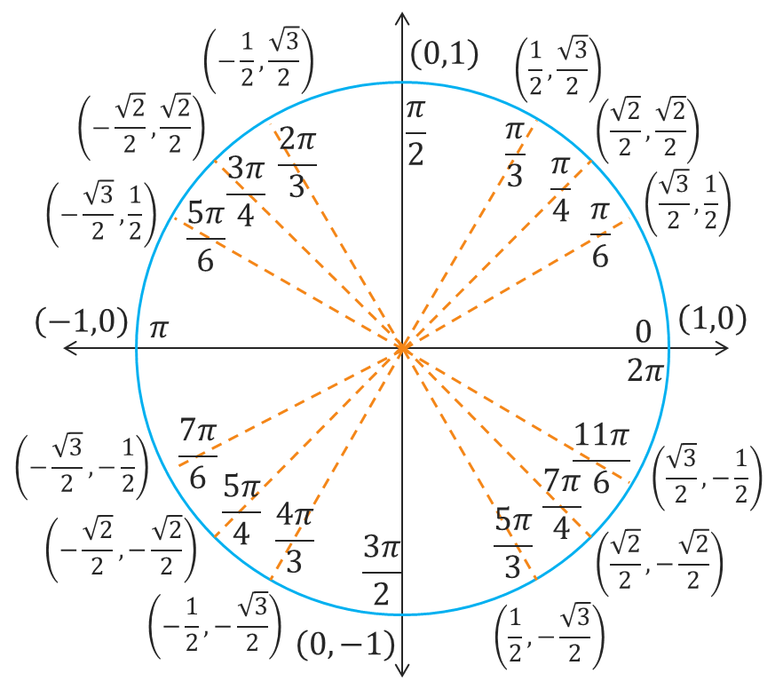

The Unit Circle
Trigonometric Functions
Trigonometric Functions
In our previous lesson, we learned about the six trigonometric function and defined them for acute angles of right triangles. In particular, we focused on the specific angles of 30°, 45°, and 60°. We now want to develop a way to compute these trig function values for any angle, not just acute angles. This process will take some work to get through, so be patient and keep with it. The foundation for our work is the unit circle, which is simply a circle of radius 1 that is centered at the origin of the \(xy\)-plane.
Next, we need a way to determine the location of any point on the circle based on its central angle and its distance from the positive \(x\)-axis. More specifically, every point \(P\), called a terminal point, on the unit circle can be associated with a real number \(t\), called a terminal number, that represents the arc length from the positive \(x\)-axis to \(P\) along the unit circle. Point \(P\) can also be associated with the intersection of the terminal side of the central angle \(\theta\) and the unit circle.
If we apply the arc length formula \(s = \theta r\) and the fact that the radius of the unit circle is 1, then we can conclude that the measure of the arc length, given by \(t\), is equal to the measure of the central angle. In other words, \(t = \theta\). This means we can apply some of the common radian measures to the unit circle to determine the coordinates of the corresponding points.
A terminal number \(t = 0\) corresponds to a central angle of 0 radians and an arc of length 0. This means the terminal point is where the unit circle intersects the positive \(x\)-axis, which tells us that the coordinates of the terminal point are \((1,0)\).
A terminal number \(t = \pi\) corresponds to a central angle of \(\pi\) radians and an arc of length \(\pi\). This means the terminal point is where the unit circle intersects the negative \(x\)-axis, which tells us that the coordinates of the terminal point are \((-1,0)\).
A terminal number \(t = \frac{\pi}{2}\) corresponds to a central angle of \(\frac{\pi}{2}\) radians and an arc of length \(\frac{\pi}{2}\). This means the terminal point is where the unit circle intersects the positive \(y\)-axis, which tells us that the coordinates of the terminal point are \((0,1)\).
A terminal number \(t = -\frac{\pi}{2}\) corresponds to a central angle of \(-\frac{\pi}{2}\) radians rotating clockwise and an arc of length \(\frac{\pi}{2}\). This means the terminal point is where the unit circle intersects the negative \(y\)-axis, which tells us that the coordinates of the terminal point are \((0,-1)\).
A terminal number \(t = \frac{\pi}{4}\) corresponds to a central angle of \(\frac{\pi}{4}\) radians and an arc of length \(\frac{\pi}{4}\). Remember that an angle of \(\frac{\pi}{4}\) is the same as a 45° angle. This means that for a right triangle whose hypotenuse is the terminal side, the horizontal and vertical sides of the right triangle must have the same length. So, the \(x\) and \(y\) coordinates of the terminal point must be the same. Using the Pythagorean Theorem, we can solve the equation \(x^2 + x^2 = 1\) which results in \(x = \frac{\sqrt{2}}{2}\). So, the coordinates of the terminal point are \((\frac{\sqrt{2}}{2},\frac{\sqrt{2}}{2})\).
This last terminal point at \(t = \frac{\pi}{4}\) suggests that we might be able to combine our knowledge of special right triangles with the unit circle. By inserting the 45-45-90 right triangle into the unit circle so that a 45° degree angle is the central angle (see first graph below), the coordinates of the terminal point correspond to the adjacent and opposite sides of the right triangle. The result is the coordinates \(\left(\frac{\sqrt{2}}{2},\frac{\sqrt{2}}{2}\right)\), which matches what we found above. If we insert the 30-60-90 right triangle into the unit circle so that a 30° degree angle is the central angle (see middle graph below), then the coordinates of the terminal point again correspond to the adjacent and opposite sides of the right triangle. This means that the coordinates of the terminal point for a central angle of 30° are \(\left(\frac{\sqrt{3}}{2},\frac{1}{2}\right)\). Similarly, if we insert the 30-60-90 right triangle into the unit circle so that a 60° degree angle is the central angle (see third graph below) and the coordinates of the terminal point again correspond to the adjacent and opposite sides of the right triangle, then the coordinates of the terminal point for a central angle of 60° are \(\left(\frac{1}{2},\frac{\sqrt{3}}{2}\right)\).
If we zoom into the first quadrant of the unit circle, as illustrated below, then we can see 5 terminal points that correspond to the central angles \(\theta\) = 0°, 30°, 45°, 60°, and 90° which correspond to the terminal numbers \(t = 0\), \(\frac{\pi}{6}\), \(\frac{\pi}{4}\), \(\frac{\pi}{3}\), and \(\frac{\pi}{2}\), respectively.
![The part of the unit circle contained within the 1st quadrant. There are five radials from the origin to the circle that represent different angles. The first radial is the positive x-axis which represents a 0 degree or 0 radian angle and it intersects the circle at the point (1, 0). The second radial forms a 30 degree or pi/6 radian angle with the positive x-axis and it intersects the circle at the point (√3/2, 1/2). The third radial forms a 45 degree or pi/4 radian angle with the positive x-axis and it intersects the circle at the point (√2/2, √2/2). The fourth radial forms a 60 degree or pi/3 radian angle with the positive x-axis and it intersects the circle at the point (1/2, √3/2). The last radial is the positive y-axis which forms a 90 degree or pi/2 radian angle with the positive x-axis and it intersects the circle at the point (0, 1).](angles-1st-quad.png)
Example: For now, let's just verify that \(\left(\frac{\sqrt{3}}{2}, \frac{1}{2}\right)\) is on the unit circle.
Any point on the unit circle must satisfy the Pythagorean Equation \(x^2 + y^2 = r^2\), which is also the equation for a circle of radius r centered at the origin.
\[\begin{align*} x^2 + y^2 &= r^2 \\ \left(\frac{\sqrt{3}}{2}\right)^2 + \left(\frac{1}{2}\right)^2 &= 1^2 \\ \frac{3}{4} + \frac{1}{4} &= 1 \\ 1 &= 1 \end{align*}\]The statement \(1 = 1\) is always a true statement, so we can conclude that the point \(\left(\frac{\sqrt{3}}{2}, \frac{1}{2}\right)\) is on the unit circle.
Remember that our goal here is to expand our ability from evaluating the 6 trig functions at only acute angles to evaluating them at any angle. So, how can we relate this idea of a terminal number to values corresponding to acute angles? In other words, we need a way to connect any terminal number \(t\) to a value that is between \(0\) and \(\frac{\pi}{2}\), or a central angle between 0° and 90°.
For each terminal point \(P\) with terminal number \(t\), there is a reference number \(\bar{t}\), pronounced "t-bar," that is the shortest distance from \(P\) to the \(x\)-axis such that \(0 \leq \bar{t} \leq \frac{\pi}{2}\). Similarly, for each central angle \(\theta\), there is a reference angle \(\bar{\theta}\) that is acute and measures from the terminal side of \(\theta\) to the nearest \(x\)-axis.
The following graphs illustrate the reference number \(\bar{t}\) for terminal numbers \(t\) in each quadrant. Note that \(\bar{t}\) always extends from \(P\) to then nearest \(x\)-axis and that it works for both counterclockwise and clockwise rotation.
If we think in terms of angle measure, then there is an acute angle \(\bar{\theta}\) that corresponds to each central angle \(\theta\). If the central angle is already acute (see example A below), then \(\theta\) is already in the first quadrant and \(\bar{\theta} = \theta\). For any central angle whose terminal side is located in one of the other quadrants (see examples B, C, and D), then there is a right triangle that can be formed by the terminal side as the hypotenuse and the \(x\)-axis as the side adjacent to the acute reference angle \(\bar{\theta}\).
Example: The completed unit circle is provided below. What symmetries or relationships do you see in the terminal numbers (or central angles) and the coordinates of the corresponding terminal points?
There are a number of relationships that we can observe about the terminal numbers or reference angles in the unit circle and their corresponding terminal point coordinates. Here are just a few.
The power behind thinking in terms of reference numbers or reference angles is that it provides a simple way to map the entire unit circle to just the first quadrant. So, instead of memorizing the entire circle, we just need to remember 3 points in the first quadrant along with the 4 intercepts. The symmetries will also be helpful with central angles or terminal numbers that are not so nice as well as future tasks like graph functions or solving equations.
©2024 M4thG33x (new window) Some Rights Reserved.